Capitolo 18 Inferenza e Diagnostica sul Modello di Regressione Lineare
18.1 Teorema di Gauss-Markov
Teorema 18.1 (Gauss-Markov) Sotto gli assunti dallo 0 al 5, gli stimatori dei minimi quadrati sono corretti \[E(\hat\beta_1)=\beta_1,\qquad E(\hat\beta_0)=\beta_0\]
La loro varianza è:
\[\begin{eqnarray*} V(\hat\beta_{1}) &=& \frac{\sigma_{\varepsilon}^{2}} {n \hat{\sigma}^{2}_{X}} \\ V(\hat\beta_{0}) &=& \sigma_{\varepsilon}^{2} \left( \frac{1} {n} + \frac{\bar{x}^{2}} {n \hat{\sigma}^{2}_{X}} \right) \\ \mbox{cov}(\hat\beta_{0}, \hat\beta_{1}) &=& - \sigma_{\varepsilon}^{2} \frac{\bar{x}} {n \hat{\sigma}^{2}_{X}} = - \bar{x} V(\hat\beta_{1}) \end{eqnarray*}\]
Gli stimatori \(\hat\beta_{0}\) e \(\hat\beta_{1}\) di \(\beta_{0}\) e \(\beta_{1}\) sono BLUE (Best Linear Unbiased Estimators).
18.2 La previsione \(\hat Y\)
Definiamo la previsione di \(Y\) per un valore \(x\) qualunque \[\hat Y_{(X=x)}=\hat\beta_0+\hat\beta_1x\]
Se \(X=x_i\) allora \[\hat Y_{(X=x_i)}=\hat Y_i\]
La previsione è corretta \[E\left(\hat Y_{(X=x)}\right)=E(\hat\beta_0+\hat\beta_1x)=E(\hat\beta_0)+E(\hat\beta_1)x=\beta_0+\beta_1x\]
La varianza \[V(\widehat{Y}_{(X=x)}) = \sigma_{\varepsilon}^{2} \left( \frac{1} {n} + \frac{(x - \bar{x})^{2}} {n \hat{\sigma}^{2}_{X}} \right)\]
18.3 Standard Errors e Stima degli SE
Gli Errori Standard (ES) delle stime sono le radici quadrate delle varianze degli stimatori \[\begin{eqnarray*} SE(\hat\beta_{0}) &=& \sqrt{\hat\beta_{0}} \\ &=& \sqrt{\sigma_{\varepsilon}^{2}\left( \frac{1} {n} + \frac{\bar{x}^{2}} {n\hat{\sigma}^{2}_{X}} \right)}\\ SE(\hat\beta_{1}) &=& \sqrt{V(\hat\beta_{1})} \\ &=&\sqrt{\frac{\sigma_{\varepsilon}^{2}} {n\hat{\sigma}^{2}_{X}} }\\ SE(\widehat{Y}_{(X=x)}) &=& \sqrt{V(\widehat{Y}_{(X=x)})} \\ &=& \sqrt{\sigma_{\varepsilon}^{2}\left( \frac{1} {n} + \frac{(x - \bar{x})^{2}} {n\hat{\sigma}^{2}_{X}} \right)} \end{eqnarray*}\]
Ricordando che \[S_{\epsilon} = \sqrt{\frac{n} {n-2}}\ \hat{\sigma}_{Y}\sqrt{1 - r^2}\]
Otteniamo le stime campionarie per gli Standard Errors
\[\begin{eqnarray*} \widehat{SE(\hat\beta_{0})} &=& \sqrt{S_{\varepsilon}^{2} \left( \frac{1} {n} + \frac{\bar{x}^{2}} {n \hat{\sigma}^{2}_{X}} \right)}\\ \widehat{SE(\hat\beta_{1})} &=& \sqrt{\frac{S_{\varepsilon}^{2}} {n\hat{\sigma}^{2}_{X}} }\\ \widehat{SE(\widehat{Y}_{X=x})}&=& \sqrt{S_{\varepsilon}^{2}\left( \frac{1} {n} + \frac{(x - \bar{x})^{2}} {n\hat{\sigma}^{2}_{X}} \right)} \end{eqnarray*}\]
18.4 Inferenza su \(\beta_0\) e \(\beta_1\) e su \(\hat Y\)
Se l’assunto 6. (normalità dei residui) è rispettato, allora
\[\hat\beta_1\sim N(\beta_1,V(\hat\beta_1)), ~~\hat\beta_0\sim N(\beta_0,V(\hat\beta_0)), ~~\hat Y_{(X=x)}\sim N\left(\beta_0+\beta_1 x,V(\hat Y_{(X=x)})\right)\]
Fisso \(n=10\), \(x_1=0.1,x_2=0.2,...,x_{10}=1.0\), \(\beta_0=0\), \(\beta_1=1\) e \(\sigma_\varepsilon^2=0.64\). Simulo 5 volte \(n=10\) punti da \[Y_i = 0 + 1\cdot x_i + \varepsilon_i,~~\varepsilon_i\sim N(0,0.64)\]
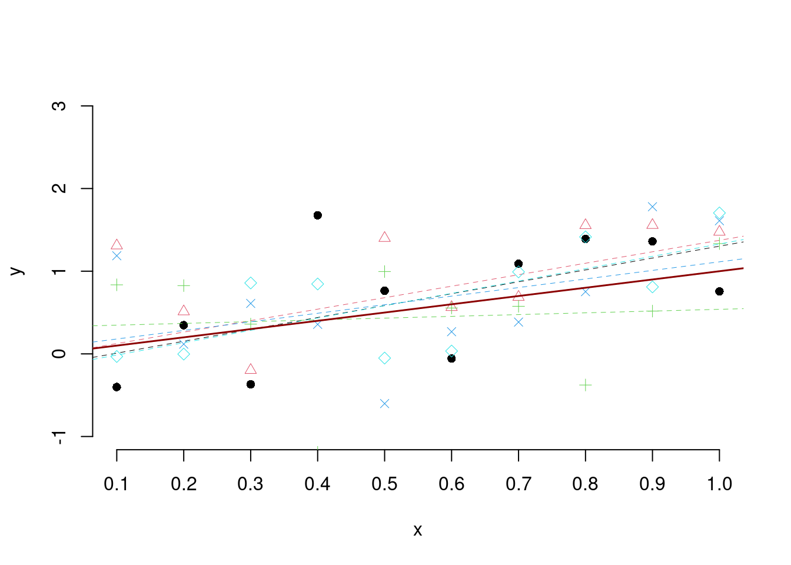
E ripeto le simulazioni ripetute 500 volte:
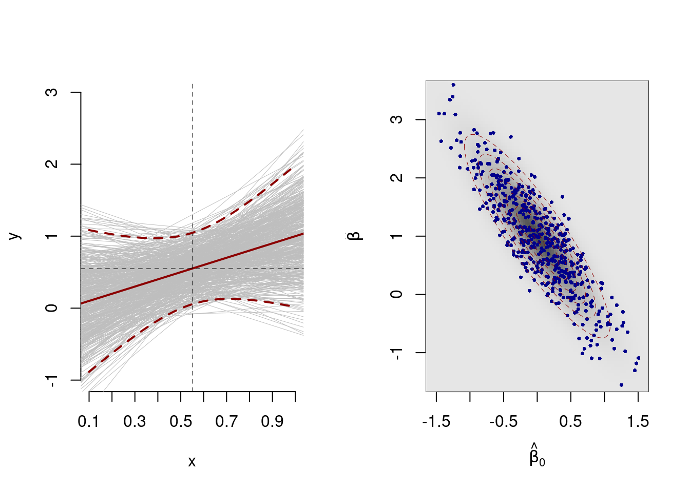
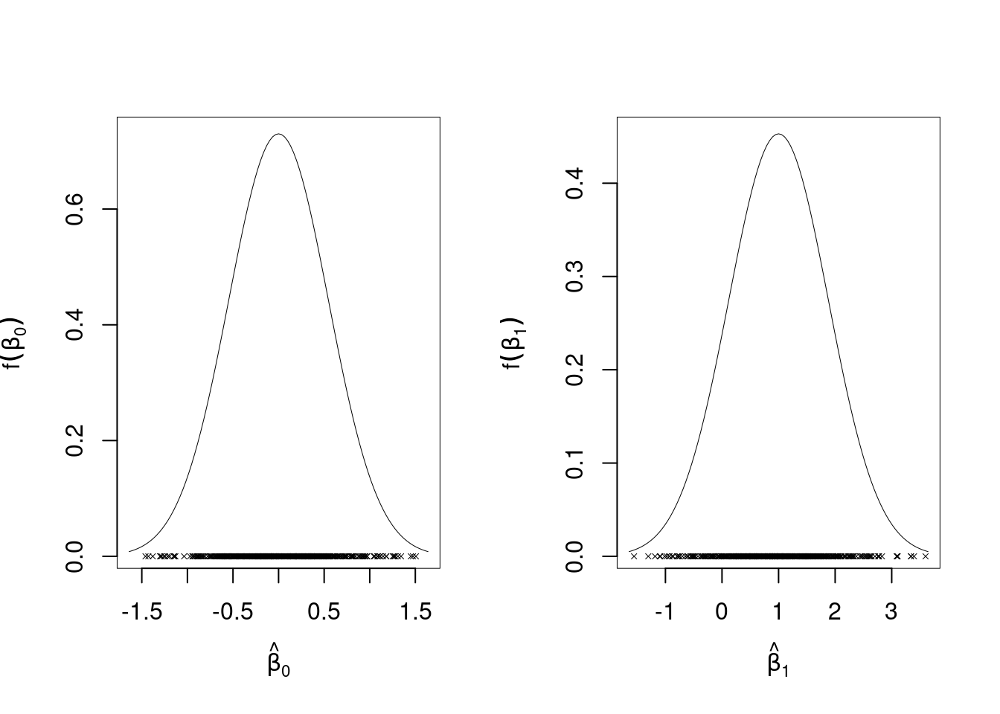
La varianza di \(\hat Y\) è l’errore di previsione \[V(\widehat{Y}_{(X=x)}) = \sigma_{\varepsilon}^{2} \left( \frac{1} {n} + \frac{(x - \bar{x})^{2}} {n \hat{\sigma}^{2}_{X}} \right)\]
18.4.1 Interpolazione e Estrapolazione
Parliamo di interpolazione dei punti se \(\hat Y_{(X=x)}\) è calcolato per \[\min\{x_i\}\leq x \leq\max\{x_i\}\]
Parliamo di estrapolazione dei punti se \(\hat Y_{(X=x)}\) è calcolato per \[x<\min\{x_i\}~~~\text{oppure}~~~ x >\max\{x_i\}\]
Voglio le vedere le previsioni per \(x>1\)
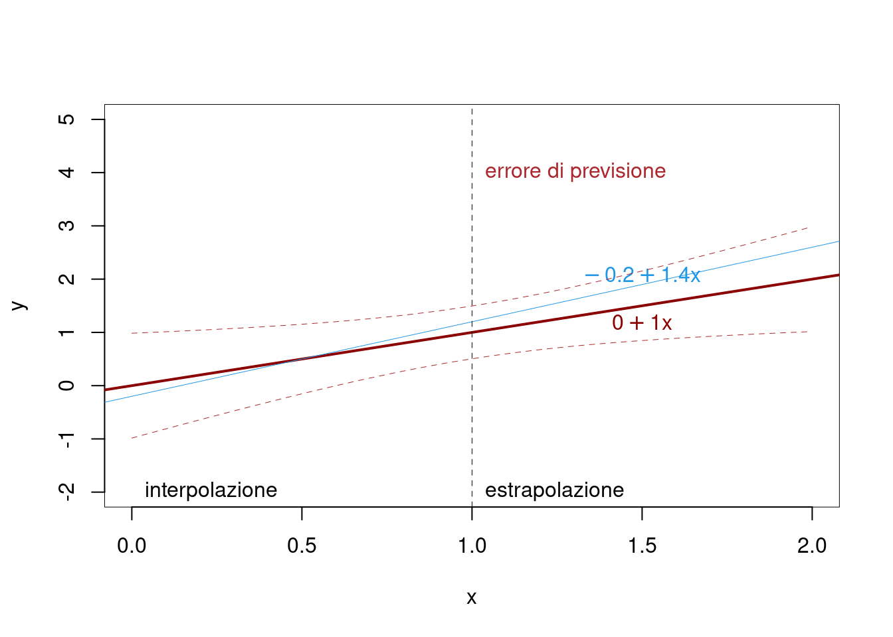
18.4.2 Intervalli di Confidenza per \(\beta_0\), \(\beta_1\) e \(\hat Y\)
Si dimostra che \[\begin{eqnarray*} \frac{\hat\beta_0-\beta_0}{\widehat{SE(\hat\beta_0)}}&\sim&t_{n-2}\\ \frac{\hat\beta_1-\beta_1}{\widehat{SE(\hat\beta_1)}}&\sim&t_{n-2}\\ \frac{\hat Y_{(X=x)}-(\beta_0+\beta_1 x)}{\widehat{SE(\hat Y_{(X=x)})}}&\sim&t_{n-2} \end{eqnarray*}\]
E dunque gli IdC al livello \((1-\alpha)\) sono dati da \[\begin{eqnarray*} \hat\beta_0 &\pm& t_{n-2;\alpha/2}\widehat{SE(\hat\beta_0)}\\ \hat\beta_1 &\pm& t_{n-2;\alpha/2}\widehat{SE(\hat\beta_1)}\\ \hat Y_{(X=x)} &\pm& t_{n-2;\alpha/2}\widehat{SE(\hat Y_{(X=x)})} \end{eqnarray*}\]
18.4.3 Test per \(\beta_0\), e \(\beta_1\)
Consideriamo i due seguenti sistemi di ipotesi \[ \begin{cases} H_0:\beta_0=\beta_{0,H_0}\\H_1:\text{da scegliere $\neq$, $>$ o $<$} \end{cases} \qquad \begin{cases} H_0:\beta_1=\beta_{1,H_0}\\H_1:\text{da scegliere $\neq$, $>$ o $<$} \end{cases} \]
Sapendo che \[ \widehat{SE(\hat\beta_{0})} = \sqrt{S_{\varepsilon}^{2}\left( \frac{1} {n} + \frac{\bar{x}^{2}} {n\hat{\sigma}^{2}_{X}} \right)} \qquad \widehat{SE(\hat\beta_{1})} = \sqrt{\frac{S_{\varepsilon}^{2}} {n\hat{\sigma}^{2}_{X}} }\\ \]
Sotto \(H_0\)
\[\begin{eqnarray*} \frac{\hat\beta_0-\beta_{0,H_0}}{\widehat{SE(\hat\beta_0)}} &\sim& t_{n-2} \\ \frac{\hat\beta_1-\beta_{1,H_0}}{\widehat{SE(\hat\beta_1)}} &\sim& t_{n-2} \end{eqnarray*}\]
otteniamo \[\begin{eqnarray*} t_{0,\text{obs}} &=& \frac{\hat\beta_0-\beta_{0,H_0}}{\widehat{SE(\hat\beta_0)}} \\ t_{1,\text{obs}} &=& \frac{\hat\beta_1-\beta_{1,H_0}}{\widehat{SE(\hat\beta_1)}} \end{eqnarray*}\]
Che andranno lette nella direzione di \(H_1\) con le solite regole
18.4.4 Esempio sui 4 punti
Tipicamente quando si fa un modello di regressione per prima cosa si testa la significatività dei coefficienti: \[ \begin{cases} H_0:\beta_0=0\\H_1:\beta_0\neq 0 \end{cases} \qquad \begin{cases} H_0:\beta_1=0\\H_1:\beta_1\neq 0 \end{cases} \]
Calcolo gli standard errors stimati
\[\begin{aligned} V(\hat\beta_1)&=\frac{\sigma_\varepsilon^2}{n\sigma_X^2} &\widehat {SE(\hat\beta_1)}&=\sqrt{\frac{S_\varepsilon^2}{n\hat\sigma_X^2}}\\ & &&=\sqrt{\frac{0.625}{4\times1.25}}\\ &&&=0.3536\\ V(\hat\beta_0)&=\sigma_\varepsilon^2\left(\frac 1 n +\frac{\bar x^2}{n\sigma_X^2}\right) &\widehat {SE(\hat\beta_0)} &= \sqrt{S_\varepsilon^2\left(\frac 1 n +\frac{\bar x^2}{n\sigma_X^2}\right)}\\ && &= \sqrt{0.625\left(\frac 1 {4} +\frac{1.5^2}{4\times 1.25}\right)}\\ && &= 0.6614 \end{aligned}\]
18.4.5 Calcolo dei valori osservati e dei valori critici
otteniamo \[\begin{eqnarray*} t_{0,\text{obs}} &=& \frac{\hat\beta_0-0}{\widehat{SE(\hat\beta_0)}}=3.4017\\ t_{1,\text{obs}} &=& \frac{\hat\beta_1-0}{\widehat{SE(\hat\beta_1)}}=1.4142 \end{eqnarray*}\]
dalle tavole ricaviamo - \(t_{n-2;0.025}=\) 4.3027 - \(t_{n-2;0.005}=\) 9.9248
e osserviamo che, per il coefficiente \(\beta_0\):
- \(|t_{0,\text{obs}}|=\) |3.4017| < 4.3027 \(=t_{n-2;0.025}\) e quindi non rifiuto \(H_0\) al livello di significatività \(\alpha=0.05\).
- \(|t_{0,\text{obs}}|=\) |3.4017| < 9.9248 \(=t_{n-2;0.005}\) e quindi non rifiuto \(H_0\) al livello di significatività \(\alpha=0.01\).
per il coefficiente \(\beta_1\)
- \(|t_{1,\text{obs}}|=\) |1.4142| < 4.3027 \(=t_{n-2;0.025}\) e quindi non rifiuto \(H_0\) al livello di significatività \(\alpha=0.05\).
- \(|t_{1,\text{obs}}|=\) |1.4142| < 9.9248 \(=t_{n-2;0.005}\) e quindi non rifiuto \(H_0\) al livello di significatività \(\alpha=0.01\).
18.4.6 Se \(n=10\)
Si supponga che a parità di statistiche \(\bar x\), \(\bar y\), \(\hat\sigma_X\), \(\hat\sigma_Y\), e \(\text{cov}(X,Y)\), ma per \(n=10\), si ottiene:
Calcolo gli standard errors stimati
\[\begin{aligned} V(\hat\beta_1)&=\frac{\sigma_\varepsilon^2}{n\sigma_X^2} &\widehat {SE(\hat\beta_1)}&=\sqrt{\frac{S_\varepsilon^2}{n\hat\sigma_X^2}}\\ & &&=\sqrt{\frac{0.3906}{10\times1.25}}\\ &&&=0.1768\\ V(\hat\beta_0)&=\sigma_\varepsilon^2\left(\frac 1 n +\frac{\bar x^2}{n\sigma_X^2}\right) &\widehat {SE(\hat\beta_0)} &= \sqrt{S_\varepsilon^2\left(\frac 1 n +\frac{\bar x^2}{n\sigma_X^2}\right)}\\ && &= \sqrt{0.3906\left(\frac 1 {10} +\frac{1.5^2}{10\times 1.25}\right)}\\ && &= 0.3307 \end{aligned}\]
Calcolo dei valori osservati e dei valori critici e ottengo
\[\begin{eqnarray*} t_{0,\text{obs}} &=& \frac{\hat\beta_0-0}{\widehat{SE(\hat\beta_0)}}=6.8034\\ t_{1,\text{obs}} &=& \frac{\hat\beta_1-0}{\widehat{SE(\hat\beta_1)}}=2.8284 \end{eqnarray*}\]
dalle tavole ricaviamo \(t_{n-2;0.025}=\) 2.306 e \(t_{n-2;0.005}=\) 3.3554
e osserviamo che, per il coefficiente \(\beta_0\):
- \(|t_{0,\text{obs}}|=\) |6.8034| > 2.306 \(=t_{n-2;0.025}\) e quindi rifiuto \(H_0\) al livello di significatività \(\alpha=0.05\).
- \(|t_{0,\text{obs}}|=\) |6.8034| > 3.3554 \(=t_{n-2;0.005}\) e quindi rifiuto \(H_0\) al livello di significatività \(\alpha=0.01\).
per il coefficiente \(\beta_1\)
- \(|t_{1,\text{obs}}|=\) |2.8284| > 2.306 \(=t_{n-2;0.025}\) e quindi rifiuto \(H_0\) al livello di significatività \(\alpha=0.05\).
- \(|t_{1,\text{obs}}|=\) |2.8284| < 3.3554 \(=t_{n-2;0.005}\) e quindi non rifiuto \(H_0\) al livello di significatività \(\alpha=0.01\).
18.5 Il modello di regressione lineare multiplo
Si tratta di un’estensione del modello semplice ma con più variabili indipendenti \[Y_i=\beta_0+\beta_1X_{i1}+\beta_1X_{i2}+...++\beta_1X_{ik}+\varepsilon_i\]
La nube dei punti non può più essere rappresentata e le soluzioni dei minimi quadrati tanto meno. Il coefficiente di determinazione lineare \(R^2\) soffre di grossi limiti all’aumentare del numero di \(x\). Per valutare quanto bene il modello si adatta ai dati si devo compiere analisi statistiche ulteriori.
18.6 Analisi dei Residui
Il modello lineare poggia sugli assunti che abbiamo elencato. La violazione degli assunti invalida le procedure inferenziali La analisi dei residui è una serie di procedure diagnostiche per controllare che gli assunti siano rispettati. Le procedure consistono nel produrre statistiche e grafici sui residui osservati \(\hat\varepsilon_i\)
18.6.1 Diagramma dei residui e retta dei residui
Un modo comune per visualizzare i residui consiste nel mettere in ordinata le \(x_i\) e in ascissa i \(\hat\varepsilon_i\). Per costruzione
\[\text{cov}(x,\hat\varepsilon)=0\]
e dunque la retta dei residui, che è la retta di regressione tra \(x\) e \(\hat\varepsilon\) è parallela all’asse delle \(x\) e coincide con esso. Esempio sui 4 punti
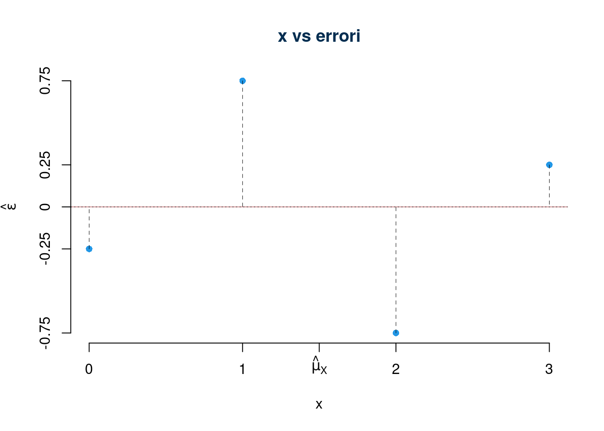
essendo \(\hat y_i\) combinazioni lineari degli \(x_i\) se mettiamo gli \(\hat y_i\) in ordinata e gli \(\varepsilon_i\) in ascissa otteniamo lo stesso grafico
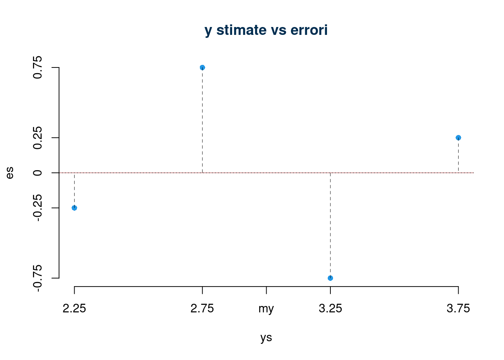
18.6.2 Lettura del Diagramma dei residui
Se tutte le assunzioni sono rispettate i residui devono essere distribuiti in modo uniforme intorno alla retta dei residui
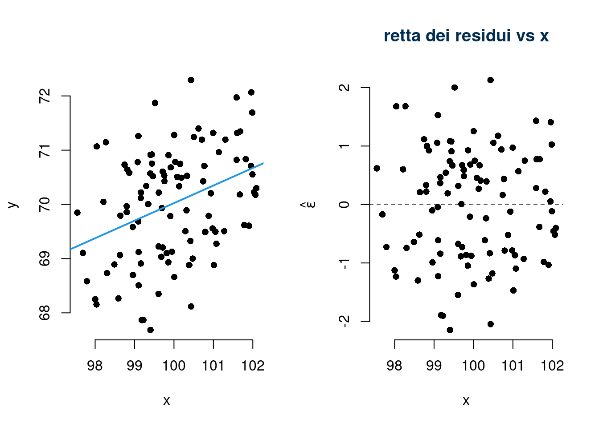
Violazione dell’assunto 0 (i punti provengono da una relazione lineare)
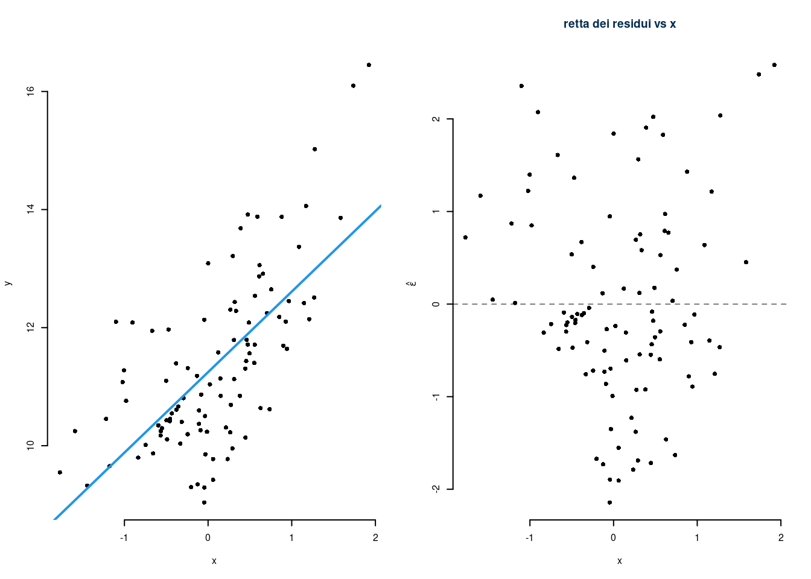
Violazione degli assunti 2. e 4. (omoschedasticità e indipendenza tra \(x\) e \(\varepsilon\))
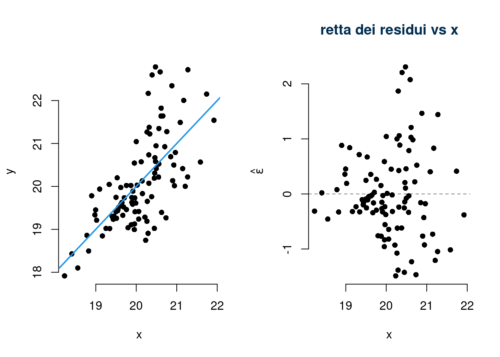
Violazione dell’assunto 3. (indipendenza gli \(\varepsilon\))
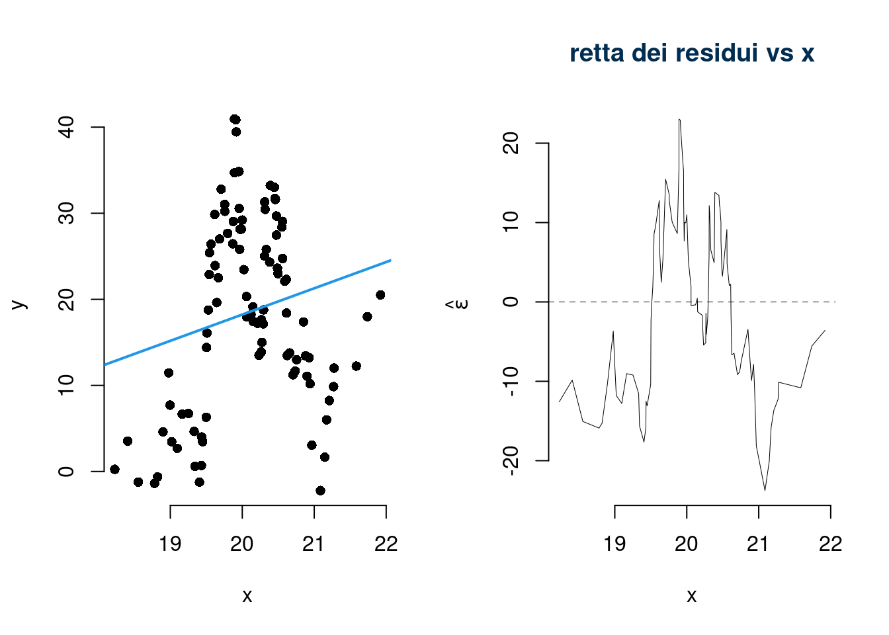
Violazioni dell’assunto 6. (normalità dei residui)
Per diagnosticare se i residui provengono da una normale ci sono diverse tecniche. Per esempio l’istogramma dei residui: si costruisce l’istogramma di frequenza e lo si compara con la normale. Se gli assunti sono rispettati ci aspetteremmo una situazione del genere
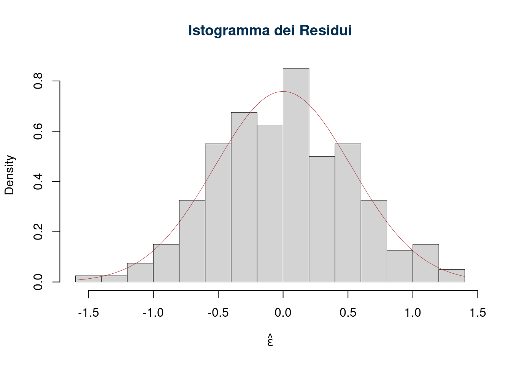
Esempio di assunto non rispettato
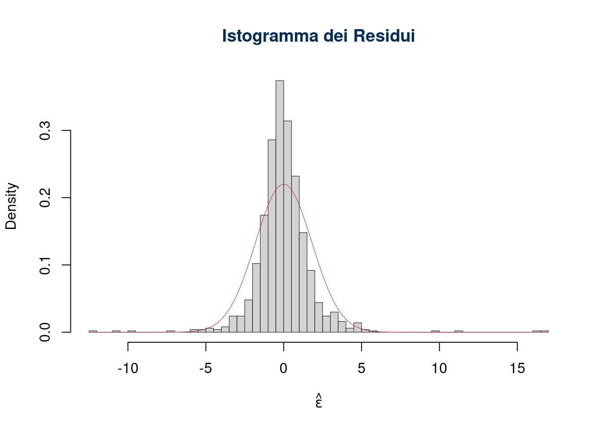
18.6.3 Normal QQ plot
Si tratta di un grafico che mette sull’asse delle x i quantile (percentili in inglese) teorici della normale e in ordinata i quantile osservati dei residui sul campione.
Si crea una tabella dei percentili degli \(\hat\varepsilon_{(1)}\)| errori ordinati | ordine del percentile | percentile teorico |
|---|---|---|
| \(\hat\varepsilon_{(1)}\) | \(1/n\) | \(z_{1/n}\) |
| \(\hat\varepsilon_{(2)}\) | \(2/n\) | \(z_{2/n}\) |
| \(...\) | \(...\) | \(...\) |
dove \(z_{i/n}\) è il percentile di un \(Z\sim N(0,1)\): \[z_{i/n}: P(Z\leq z_{i/n})=i/n\]
Se le \(z_{i/n}\) e le \(\hat\varepsilon_i\) giacciono su una retta, allora gli errori si possono assumere normali, tanto più i punti si allontanano tanto più l’ipotesi è violata.
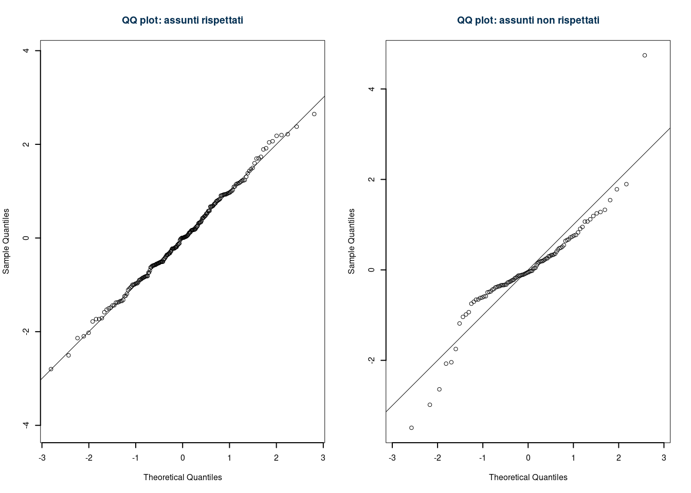
18.7 Punti di leva, Outliers e punti influenti
Ci sono tre tipi di dati anomali, in particolare
- Outlier: osservazione con residuo anomale (sulle \(y\))
- Leverage: (punto di leva), valore anomalo (sulle \(x\))
- Influence Points: (punti influenti) osservazioni con comportamento anomalo che influenzano notevolmente i risultati
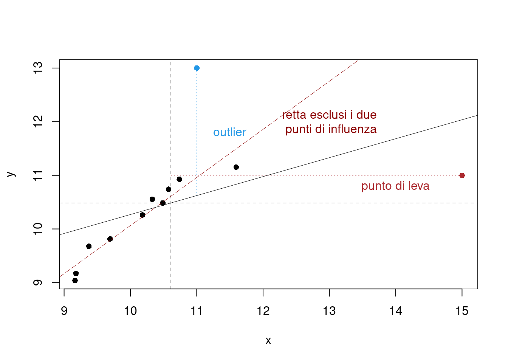
18.7.1 Punti di leva
Possiamo misurare la distanza di ogni singola \(x_i\) dalla propria media \(\bar x\) con la seguente misura chiamata leva \[ h_{i} = \frac{1} {n} + \frac{(x_{i} - \bar{x})^{2}} {n \hat\sigma_{X}^{2}} \]
Valori di \(x\) con indice di leva alto sono lontani dal centro. In particolare se \[h_i>\frac 2 n\] allora \(x_i\) è un punto di leva. I Punti di leva possono avere effetto sul calcolo dei coefficienti di regressione. I punti a alta leva (con \(h_{i} > 2/n\)) sono nei valori estremi della variabile esplicativa e sono potenzialmente influenti, nel senso che possono influenzare in misura rilevante la pendenza della RdR. Infatti, i punti di leva possono portare a risultati forvianti per esempio
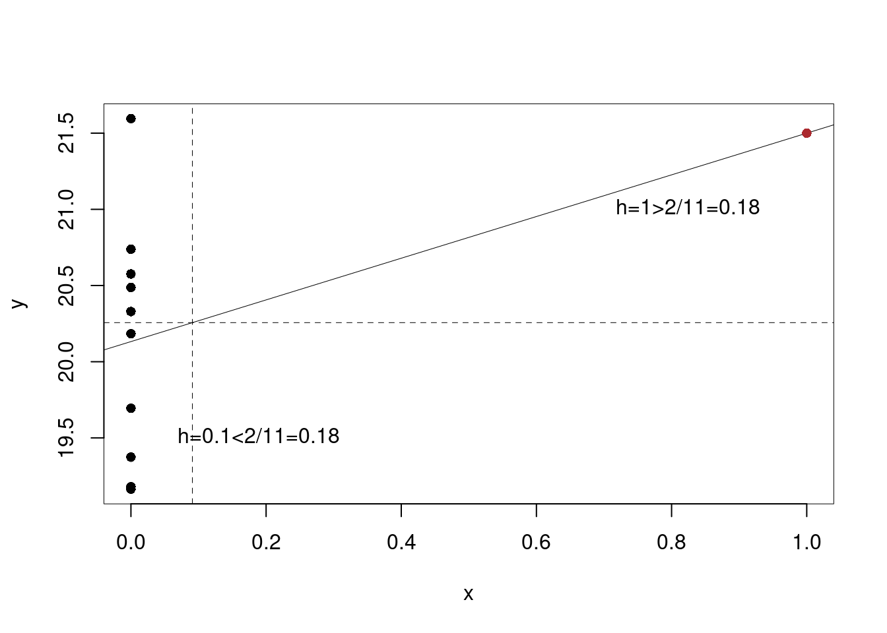
| \(x_i\) | 0.00 | 0.00 | 0.00 | 0.0 | 0.00 | 0.00 | 0.00 | 0.00 | 0.00 | 0.00 | 1.0 |
| \(y_i\) | 19.37 | 20.18 | 19.16 | 21.6 | 20.33 | 19.18 | 20.49 | 20.74 | 20.58 | 19.69 | 21.5 |
| \(h_i\) | 0.10 | 0.10 | 0.10 | 0.1 | 0.10 | 0.10 | 0.10 | 0.10 | 0.10 | 0.10 | 1.0 |
Ma non sempre un punto a leva alta è un punto influente
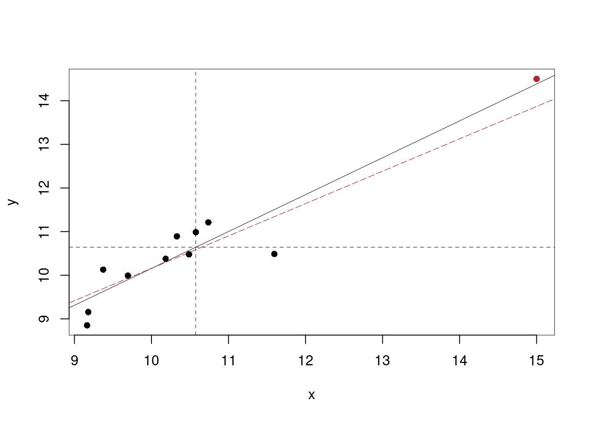
| \(x_i\) | 9.37 | 10.18 | 9.16 | 11.60 | 10.33 | 9.18 | 10.49 | 10.74 | 10.58 | 9.69 | 15.00 |
| \(y_i\) | 10.13 | 10.38 | 8.85 | 10.49 | 10.89 | 9.16 | 10.48 | 11.21 | 10.99 | 9.99 | 14.50 |
| \(h_i\) | 0.14 | 0.10 | 0.16 | 0.13 | 0.09 | 0.16 | 0.09 | 0.09 | 0.09 | 0.12 | 0.82 |
18.7.2 I residui Studentizzati
La studentizzazione è una specie di standardizzazione nella quale si tiene conto anche dei valori di leva. I residui studentizzati sono dati da: \[ \tilde{\varepsilon}_{i} = \frac{\hat{\varepsilon}_{i}}{S_{\varepsilon} \sqrt{1 - h_{i}}} \sim t_{n-2} \]
Si preferiscono i residui studentizzati perché incorporano le leve e sono più confrontabili. La distribuzione è \(t\) con \(n-2\) gradi di libertà, se per qualche \(i\), \(|\tilde{\varepsilon}_{i}|>t_{\alpha;n-2}\) allora siamo in presenza di punti anomali che diventano punti influenti per il calcolo di \(\hat\beta_0\) e\(\hat\beta_1\).
Esempi
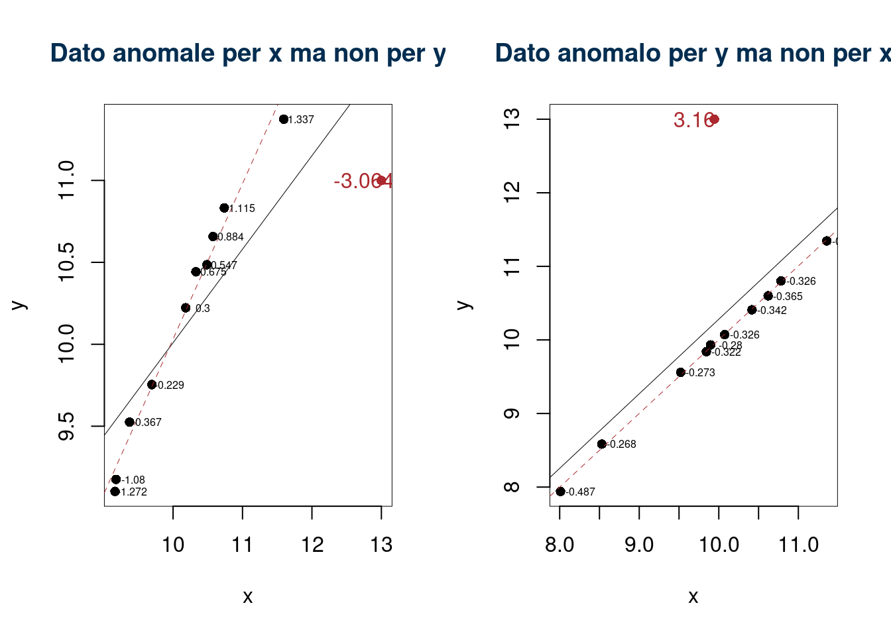
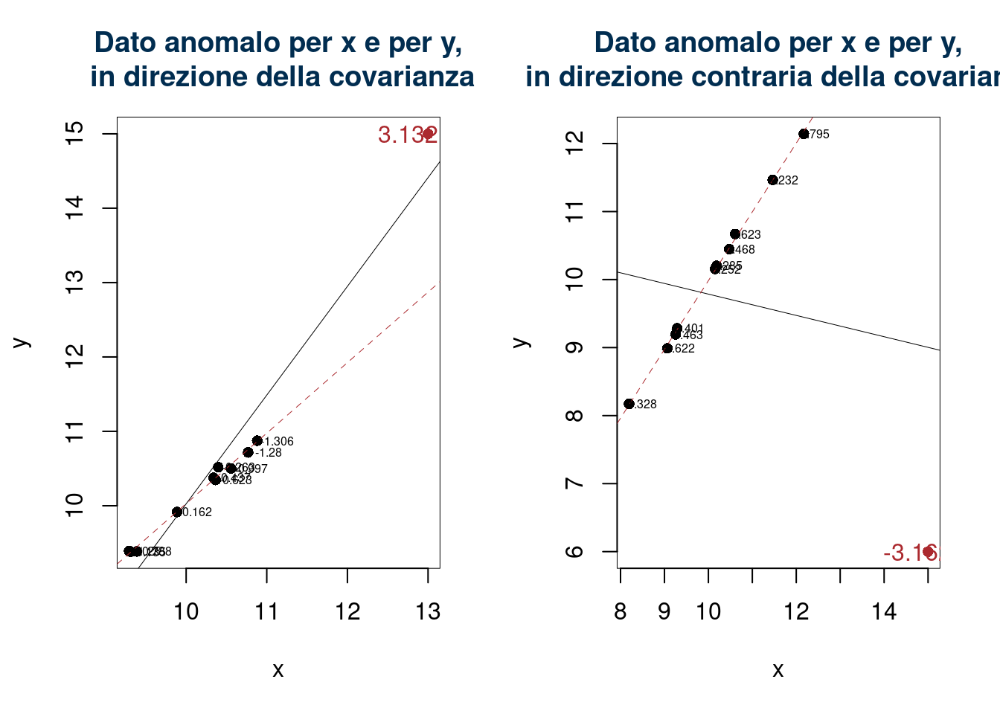
Esempio numerico
| \(x_i\) | 9.37 | 10.18 | 9.16 | 11.60 | 10.33 | 9.18 | 10.49 | 10.74 | 10.58 | 9.69 | 13.00 |
| \(y_i\) | 9.52 | 10.22 | 9.10 | 11.37 | 10.44 | 9.18 | 10.49 | 10.83 | 10.66 | 9.75 | 11.00 |
| \(h_i\) | 0.17 | 0.09 | 0.21 | 0.20 | 0.09 | 0.20 | 0.09 | 0.10 | 0.09 | 0.13 | 0.62 |
| \(\tilde\varepsilon_i\) | -0.37 | 0.30 | -1.27 | 1.34 | 0.68 | -1.08 | 0.55 | 1.11 | 0.88 | -0.23 | -3.06 |
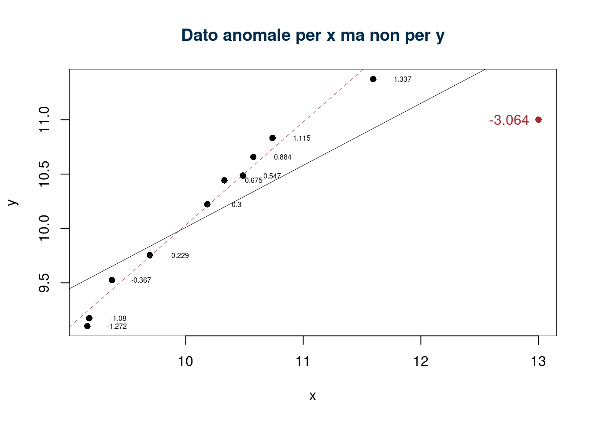
18.8 Relazione tra \(Y|X\) e \(X|Y\)
Fin’ora abbiamo considerato il modello \[y_i = \beta_0+\beta_1+\varepsilon_i\]
Supponiamo di invertire il ruolo della \(x\) con la \(y\) \[x_i = \alpha_0+\alpha_1y_i+\delta_i\]
Le stime dei minimi quadrati sono analoghe \[ \begin{aligned} \hat\beta_1 &=\frac{\text{cov}(x,y)}{\hat\sigma_X^2} & \hat\alpha_1 &=\frac{\text{cov}(x,y)}{\hat\sigma_Y^2}\\ \hat\beta_0&=\bar y-\hat\beta_1\bar x & \hat\alpha_0 &=\bar x-\hat\alpha_1\bar y \end{aligned} \]
In generale \[\hat\beta_0\neq\hat\alpha_0,\qquad\hat\beta_1\neq\hat\alpha_1\]
In particolare \[\hat\beta_1=\hat\alpha_1, \text{ se e solo se }\hat\sigma_X^2=\hat\sigma_Y^2\]
Mentre \[\hat\beta_0=\hat\alpha_0, \text{ se e solo se }\hat\beta_1=\hat\alpha_1, \text{ e se }\bar y=\bar x\]
18.8.1 Relazione tra gli \(\alpha\) i \(\beta\) ed \(r\)
Essendo: \[\begin{eqnarray*} \hat\beta_1 &=&\frac{\text{cov}(x,y)}{\hat\sigma_X^2}\\ \hat\beta_1 &=&\frac{\hat\sigma_Y}{\hat\sigma_Y}\frac{\text{cov}(x,y)}{\hat\sigma_X^2}\\ \hat\beta_1 &=&\frac{\hat\sigma_Y}{\hat\sigma_X}\frac{\text{cov}(x,y)}{\hat\sigma_Y\hat\sigma_X}\\ \hat\beta_1 &=&\frac{\hat\sigma_Y}{\hat\sigma_X}r \end{eqnarray*}\]
Quindi: \[\begin{eqnarray*} \hat\alpha_1 &=&\frac{\text{cov}(x,y)}{\hat\sigma_Y^2}\\ \hat\alpha_1 &=&\frac{\hat\sigma_X}{\hat\sigma_Y}r \end{eqnarray*}\]
Graficamente
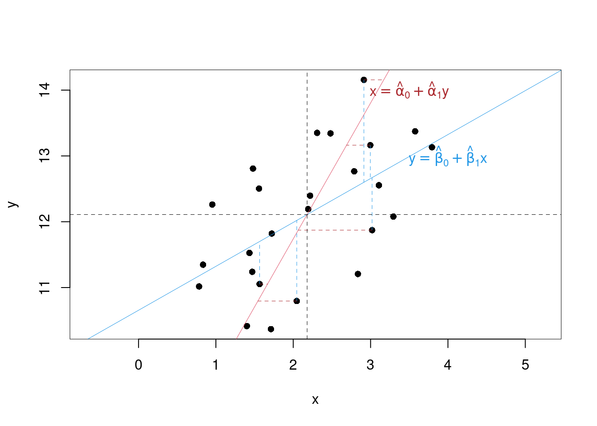
18.8.2 Regressione sulle variabili standardizzate
Se standardizziamo sia \(x\) che \(y\), otteniamo \[z_{Xi}=\frac{x_i-\bar x}{\hat\sigma_X}\qquad z_{Yi}=\frac{y_i-\bar y}{\hat\sigma_Y}\]
Abbiamo eliminato l’unità di misura sia da \(x\) che da \(y\) e centrato la nube dei dati
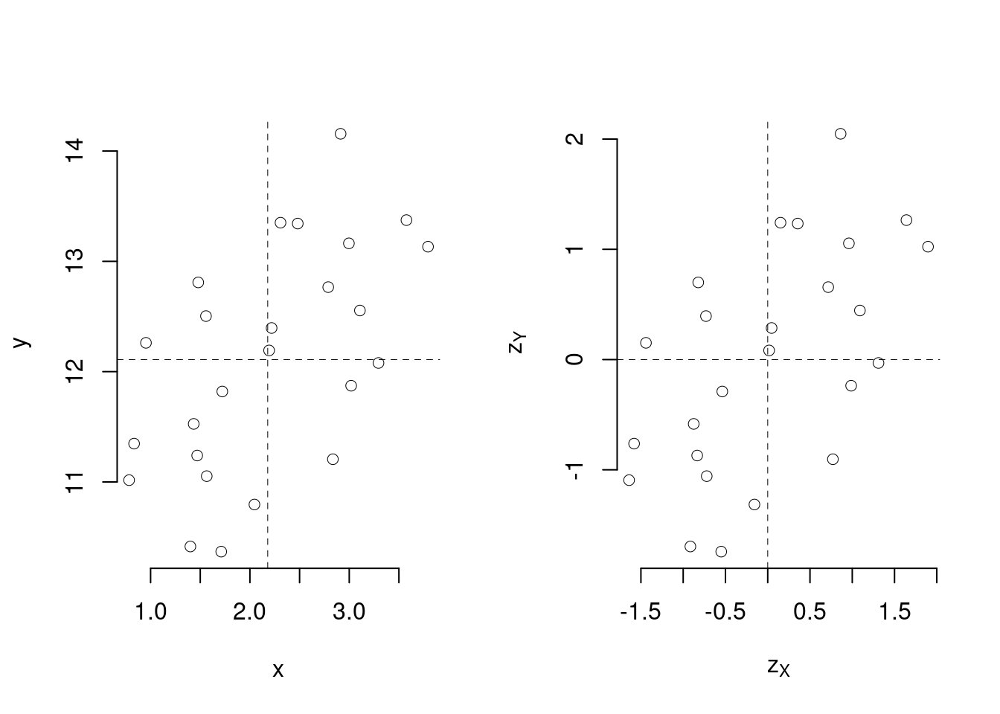
I dati standardizzati hanno media zero e varianza 1 \[\begin{aligned} \frac 1 n \sum_{i=1}^n z_{Xi} &=0 & \frac 1 n \sum_{i=1}^n z_{Xi}^2 &=1\\ \frac 1 n \sum_{i=1}^n z_{Yi} &=0 & \frac 1 n \sum_{i=1}^n z_{Yi}^2 &=1\\ \end{aligned} \]
Dalle proprietà del coefficiente di correlazione \[r_{Z_X,Z_Y}=r_{X,Y}=r\]
E dunque \[\begin{aligned} r &=\frac{\text{cov}(z_X,z_Y)}{\hat\sigma_{Z_X}\hat\sigma_{Z_Y}}\\ &= \frac{\text{cov}(z_X,z_Y)}{1\times 1}\\ &= \text{cov}(z_X,z_Y) \end{aligned} \]
Si considerino i due modelli \[z_{Yi}=\beta_{0Z}+\beta_{1Z}\cdot z_{Xi}+\varepsilon_{Zi}, \qquad z_{Xi}=\alpha_{0Z}+\alpha_{1Z}\cdot z_{Yi}+\delta_{Zi}\]
Allora \[\begin{aligned} \hat\beta_{1Z} &=\frac{\text{cov}(z_X,z_Y)}{\hat\sigma^2_{Z_X}} & \hat\alpha_{1Z} &=\frac{\text{cov}(z_X,z_Y)}{\hat\sigma^2_{Z_Y}}\\ &=\frac{r}{1^2}=r & &=\frac{r}{1^2}=r\\ \hat\beta_{0Z} &=\bar z_{Y} - \hat\beta_{1Z} \bar z_X &\hat\alpha_{0Z} &=\bar z_X - \hat\alpha_{1Z} \bar z_Y\\ &= 0 + r \cdot 0 =0 & &= 0 + r \cdot 0 =0 \end{aligned} \]
Graficamente
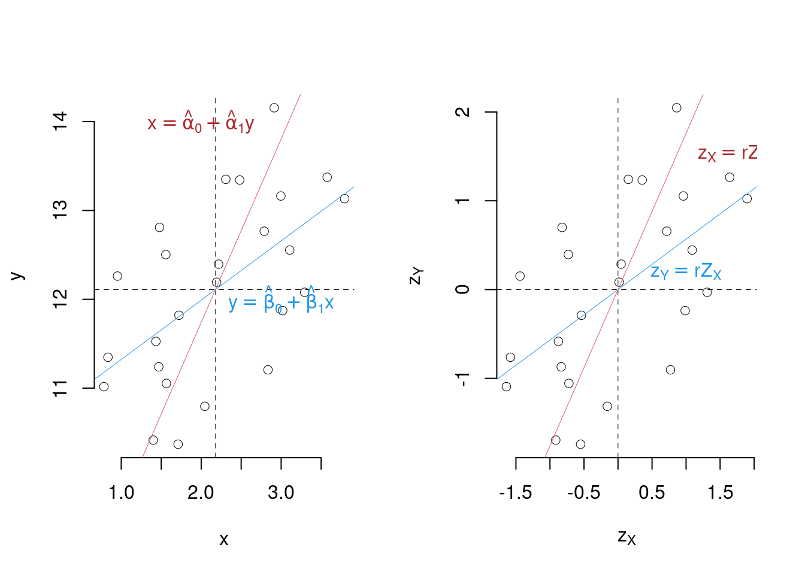